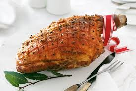

Sami's Christmas Ham
- 5kg Cooked Leg Ham
- 2 Tbsp Whole Cloves
- 1 Can Guinness Beer
- 1 Cup Maple Syrup
- 1 Cup of Honey
- 3/4 Cup Whole Grain Mustard
Method
- Preheat oven to 190 degrees.
- Using a sharp knife, make an incision around the shank of the ham.
- Starting at the bottom of the ham, slide your fingers under the skin and work off the fat from the top to
the shank. Discard skin.
- Using a sharp knife, score shallow criss-cross patterns in fat at 1.5cm intervals, without cutting into
meat.
- Stud the criss-cross patterns with a clove in each diamond.
- On stove-top, combine Guinness Beer, Maple Syrup, Honey and Mustard. Stir until simmering.
- Glaze ham with combined ingredients. Bake for 2 hours, basting ham at 20 minute intervals.
- Slice and serve.
